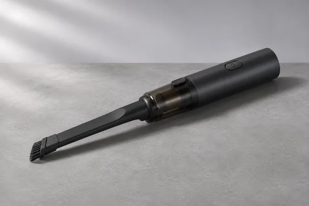

Көлік шаңсорғышы
Жіктер мен саңылауларға
Орындықтағы қиқымды сорып, терең ойықтағы шаңды үрлеп шығарыңыз.
- Қуаты
- 120 Вт
- Аккумулятор
- 2 000 мА·сағ
- Тар ойықтар
- Үрлеу

Тар жерлерге арналған саптамалар
Жіңішке саптама жікке жетеді. Қысқа саптама үрленетін ауаны бағыттайды.
Үйге ме, көлікке ме?
Еден мен жиһазға — сымсыз шаңсорғыш
Ұзын түтік еденге, алынбалы блок орындық пен сөреге арналған.
Көлік салонына — көлік шаңсорғышы
Жіңішке саптама жіктерге, бағытталған ауа ағыны ойықтарға арналған.
Сипаттамалар
Барлық параметрлер 5
- Модель
- A2
- Қуаты
- 120 Вт
- Аккумулятор
- 2000 мА·сағ
- Режимдер
- Сору және үрлеу
- Жабдық
- Ауыспалы саптамалар
Үрлеу режимін қай кезде қосқан дұрыс?
Ашық жіктің бойына әдетте сору режимі жеткілікті. Терең науадағы шаңды қол жететін бетке қарай шығару керек болса, үрлеу режимі ыңғайлы.
Жиналған қоқыс қайда түседі?
Қоқыс саптама мен корпустың арасындағы ыдысқа түседі. Тазалықтан кейін ыдысты ашып, ұсақ қоқыс нығыздалып қалмай тұрғанда босатуға болады.
Бір қуатпен қанша уақыт жұмыс істейді?
Аккумулятордың сыйымдылығы 2000 мА·сағ. Бүкіл салонды бір қуатпен тазалау маңызды болса, өзіңіз қолданатын режимдегі жұмыс уақытын сатып аларда нақтылап алыңыз.
Пәтердің еденіне де қолдану үшін қай үлгі қолайлы?
Сымсыз шаңсорғышта еден щеткасы мен ұзын түтік бар. Көлік шаңсорғышы тар салонда саптаманы әр бұрышқа бұрып, шағын жерді тазалауға ыңғайлы.

Үй жинау
Көлік шаңсорғышы
[16 990 ₸]
- [Қоймада бар]
- Жеткізу [1–7 күн]
- Кепілдік [12 ай]
Сатушыға сұрақ қою
Мәтінді көшіріп, сатушыға жіберіңіз. Тауар атауы енгізілген.